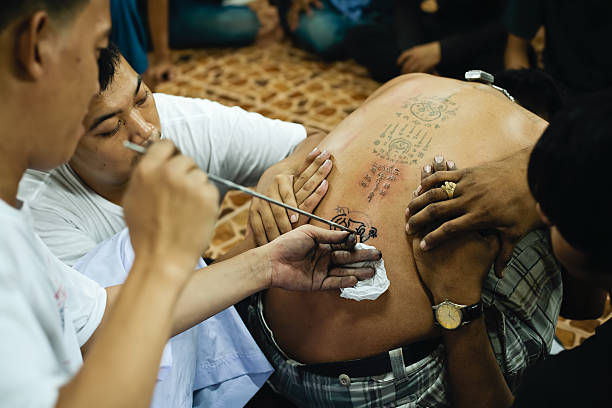

Es una técnica para hacer tatuajes completamente a mano, sin la utilización de máquinas, tal y como lo hacían nuestros antepasados indígenas orientales en épocas ancestrales.
Se dice que los primeros tatuajes que se conocen fueron realizados a mano alrededor del año 5000 a.C.; estos eran símbolos que tenían que ver con la magia, la protección, la medicina y las creencias espirituales. Se sabe también que las tribus Polinesias fueron quienes le dieron la palabra tautau, que significa tatuaje, a la técnica de arte corporal que utilizaban para hacer símbolos de distinción entre las tribus y entre los rangos de las personas sobre el cuerpo. Esta técnica se vió casi que extinguida en 1891, cuando la máquina para hacer tatuajes fue inventada en Nueva York por el tattoo artist Samuel O'Reilly.
